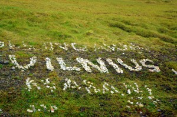

Kaip atsimenat, išvažiavau prieš pat sesiją metęs mokslus. Jau esu grįžęs, kaip sako vėliavėlė šone, virš 210 dienų.
Tomas Tvarijonas dvidešimtojo gimtadienio proga man atvežė nuotrauką.

Mano Vilnius Nordkape sudėtas
Kas gero?
Kaip atsimenat, išvažiavau prieš pat sesiją metęs mokslus. Jau esu grįžęs, kaip sako vėliavėlė šone, virš 210 dienų.
Tomas Tvarijonas dvidešimtojo gimtadienio proga man atvežė nuotrauką.
Mano Vilnius Nordkape sudėtas
Kas gero?
Antradienį (06 16) nusprendžiau išvažiuoti iš fjordų į Stokholmą.
Pirmiausia reikėjo susirasti nakvynę: Stokholme ketinu pabūti savaitę. Ir, koks netikėtumas: susiveikiau per Facebook’ą Sigurdą.
Kelionė Forde->Stockholm buvo savotiškai įdomi. Pirma, planavau nuvykti iki STHLM per dvi dienas, nuvykau per tris. Surinkau papildomus penkis šimtus kilometrų…
Naktinis ir dieninis Stokholmas, pasivaikščiojimai, muziejai, nereali gyvenamoji vieta ir net freeganavimas. Viskas aprašyta šiame įraše.

Aš Stokholme

Woo-hoo! 
Ką vertingesnio galėjau pamesti??
Pamesti daiktai:
Taip išėjo, kad vėl turiu laisvą pusiaunaktį. Pagalvojau įrodysiu, kad nerašau ne todėl, kad nuobodu. Priešingai.
Detaliai aprašysiu dvi paskutines dienas.
(more…)
Turbūt nė nereikia pranešti, kad dizainas pasikeitė: patys matote.
Įdėjau savo lokaciją: paprasta, bet veikia. Kliktelkite dešinėje.
Lauksiu įvairių atsiliepimų „web 1.0 stiliaus“ svečių knygoje.
Taigi šiek tiek „knisinėjuosi“ prie internetinių džiaugsmų: ir naktį birželio 5-6 nemiegojau 
Smagu.
Pradedu tranzuoti į Bergeną. Vienuoliktą – dvyliktą beveik susitariau su Marit (mamos draugės dukteriim), kad mane priims viešnagei.
Taigi linkėjimai, ir susirašysim už savaitės arba anksčiau! 
Motiejus iš Narvik (matote dešinėje kur tai yra).
Sveiki,
Vėl aš trumpai – tiek džiaugsmų nuveikti 
Dabar rašau iš Narvik esančio kempingo.
Google maps vieta – čia.
Beje, šviečia saulė  Dabar yra 00:25 vietos laiku. Smagu. Ir žemiau jau nenusileis.
Dabar yra 00:25 vietos laiku. Smagu. Ir žemiau jau nenusileis.
Taigi važiavau su tais pačiais džiaugsmingais vokiečiais porą dienų. Vardai – Wolfgang ir Debora (nesuprantu, kaip atsimenu Deborah). Abu pasižymėję dviračiais, pavažiavę gan toli ir įdomiai… Ne šiaip vakariečiai. Deborah 19`kos metų važiavo viena dviračiu per Švediją palei Baltijos jūrą, ten ir sutiko Wolfgang.
Čia jos dienoraštis, įdomu (kas mokate vokiškai).
Ji dar yra pravažiavusi visą pabaltijį dviračiu, ir dar pasitrankiusi Švedijoje. Tame pačiame puslapyje jos vardu yra straipsniai. Rekomenduoju  Taigi su tokia kompanija pasivažinėjau po šiaurinę Norvegiją.
Taigi su tokia kompanija pasivažinėjau po šiaurinę Norvegiją.
Pasifotkinome kaip reikiant. Čia aš Nordkape:

Atvykome į Ivalo: aš ir Vase
Mintis iš vakaro tokia: atsilekeliu ryte dar tikrai prieš šeimininkui grįžtant, susitvarkau daiktus, imu kompą, susirandu rozetę ir ramiai dirbu iki jis atvažiuoja. Pasiimu akinius ir nykstu. Nebenorėjau daugiau kliudyti/trukdyti/rodytis. Akiniai, mačiau, guli pas jį ant valgomojo stalo.
Dėja ryte atsikėliau 8:30, ir, kaip embarrassing, radau prie palapinės padėtus pusryčius. D`OH. Galvoju atvažiavo vaikinas ir išvažiavo iš ryto vėl (jo pačio nei kieme, nei prie upės, nei name nebuvo). Nepatiko man visa tai – ką turėjo pagalvoti? Aiškiai akinių nepastebėjęs: jie kaip buvo taip ir liko ant stalo.
Na, paprogramavau truputį JavaScript (naudojau jo elektrą), ir grįžo. Pasiėmiau akinius, ir atsisveikinome. Pasirodo, jis baikerių susitikime nebuvo, o tąnakt miegojo sode. Ir aš dairydamasis jo nepastebėjau.
(more…)
Rašau iš Suomijos, miestelio Orivesi (tarp Tampere ir Jyväskylä) bibliotekos. MWOC dalyvis mane čia atvežė. Telefonas neveikia – žinučių nei išsiųsti, nei gauti, nei skambinti. Šįkart įspūdžiuose suomiška žuvis (woo-hoo), keltas, pagerintas laukimo rekordas, nuostabus rytas gamtoje. Ir dar.
(more…)
Šįkart įspūdžiai tokie: dieninis Talinas ir mokslai. Be programavimo ir “crack`inimo” neapsieita 
Pasiskolinau iš kaimynų internetą (brutaliai).
Trumpai drūtai – aš dar Taline  Taip man čia patiko, kad nutariau dar pabūti. Apėjau dieną visus naktinius maršrutus, o paskui dirbau ir mokiausi. Bet rytoj ryte jau tikrai į keltą: Suomija.
Taip man čia patiko, kad nutariau dar pabūti. Apėjau dieną visus naktinius maršrutus, o paskui dirbau ir mokiausi. Bet rytoj ryte jau tikrai į keltą: Suomija.
Diena 2, 2009-05-18
Anginą žudau šnypšdamas nosį ir gerdamas arbatą. Atvykimas į Taliną niekuo ypatingas. Ko nepasakyčiau apie patį Taliną.
Pats nuostabiausias miestas, kuriame esu buvęs.
Taip, aš čia. Pirmą kelionės dieną atsitiko dalykų, kurių per savo tranzavimo istoriją dar nepatyriau.
Viskas prasidėjo nuo išvažiavimo ties Voke 3. Atvažiavo draugai išlydėti kelionėn.
Čia bus istorija apie studentą, kuris įstojo į „kiečiausią“ MIF`o specialybę (FDM), pasimokė beveik metus ir metė.
Taigi mečiau mokslus. Žiūriu, kad turiu daug laisvo laiko – pusantrų metų. Gera proga pakeliauti.
Seniai svajojau apie tranzą į Norvegiją – Nordkapą (kaip Vladas Sapranavičius mano mamai sakė – “popsūchą”) – tai ir nusprendžiau važiuoti ten.
Važiuosiu turėdamas skreitinuką kuprinėje, padirbėsiu, paprogramuosiu, paskaitysiu istoriją, pažvejosiu, pasigrožėsiu gražute Norvegija. (more…)

{kind=link}
{kind=link}
{kind=link}
{kind=link}
{kind=link}
{kind=link}
{kind=link}